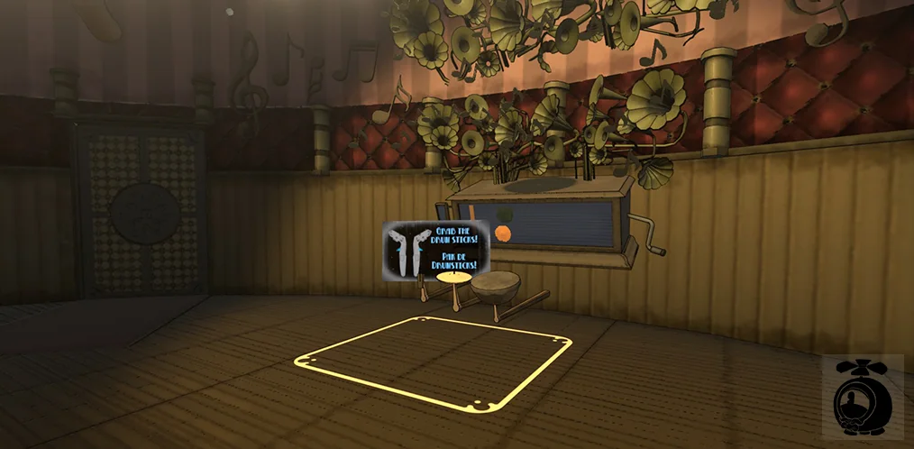

VRで劇場を移動する
劇場はリビングよりはるかに広いため、移動はテレポートで行います。Viveコントローラーを向けると放物線が表示されます。発射体の軌道を区間ごとにたどり、ワールドに当たった地点を求める仕組みです。着地できるのは平らで歩ける面だけなので、小道具の中や壁に張り付くことはなく、マーカーが立つ位置を正確に示します。
瞬間移動なので酔いにくく、放物線のおかげで遠くのバルコニーやステージにも説明なしでたどり着けます。

デザイナーが自分でゲームを組み立てる
6人・10週間の開発で、扉やスイッチやパズルのたびにプログラマーがボトルネックになるわけにはいきません。そこでデザイナーが直接使えるトリガーシステムを作りました。オブジェクトにトリガーを付け、実行する処理を関数のドロップダウンから選び、パラメーターを入力するだけ。範囲に入ったとき、または衝突したときに実行されます。
これによりデザイナーはインタラクションを自分で設定でき、私はその下のシステムの開発に集中できました。
トリガーに入ったとき「Player」タグのオブジェクトが範囲に入る
関数：ドロップダウンリストから選ぶだけ、コード不要
パラメーターインスペクターに直接入力
リズムゲームのためのレベルエディター
ミニゲームの一つは、バンドの音楽に合わせて遊ぶリズムゲームです。秒単位で手作業でノーツを置いても音楽とは合わないため、拍を単位に編集できるエディターをUnity内に作りました。曲のBPMを設定すると、ノーツは曲と同期したビートグリッドにスナップします。
翌年には、本格的なリズムゲーム用エディターosu!catch レベルエディターを個人で開発しました。

サクシオン応用科学大学の学生6人のチームで制作。